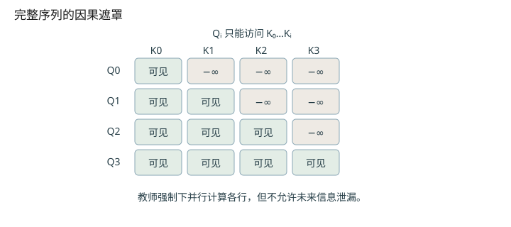
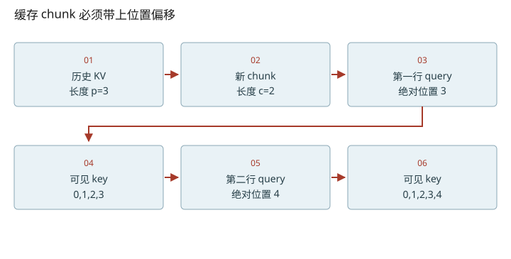

深入篇 17 / Transformer 逐步拆解 · 2026-11-08
因果遮罩：训练能并行，生成为什么要等
为 prefill、单步 decode 和带缓存的 chunk 写出正确的可见区间。
为 prefill、单步 decode 和带缓存的 chunk 写出正确的可见区间。

一次前向的并行，不等于生成的并行
训练时已知整条目标序列，输入 [A,B,C] 的三个位置可以一起计算，标签分别是 [B,C,D]。因果遮罩保证 A 的表示不会看到 B 或 C；所以矩阵运算可以并行，预测依赖仍然是因果的。生成时 D 未知，必须先由 C 位置的输出采样 D，再把 D 输入下一步。这是数据依赖，不是 Python for 循环写得慢。原始 decoder 遮罩设计见论文 §3.1 与 §3.2.3。
把绝对位置写进公式
Q 的形状 [c,d]；K 的形状 [p+c,d]
第 i 个新 query 的绝对位置 = p+i
允许访问 j ≤ p+i；其余 M[i,j]=−∞
p=3、c=2 时 mask 的两行可见性分别是 [1,1,1,1,0] 和 [1,1,1,1,1]。若对 [2,5] 直接做不带 offset 的左上三角，第一行只看到第0个 key，虽然维度正确，语义已经错了。不同库对非方阵 causal 对齐方式可能不同；写实验时显式构造绝对位置 mask，读框架时核对传入的 query/key lengths 与 backend 合约。
padding mask 和 causal mask 解决不同问题
causal mask 屏蔽未来；padding mask 屏蔽不属于请求的补齐位置。nano-vllm prefill 将多条序列压平，用 cu_seqlens 记录分段，避免在 prompt 侧逐行补齐；decode 的 CUDA Graph 又会补到捕获的 batch size，并用 context_lens=0 与 slot_mapping=−1 处理额外位置。不能把任何“padding”都当成一种机制。
缓存的正确性依赖过去 token 的本层 K/V 不因新 token 到来而改变；因果结构让这个复用成立。如果改成双向 attention，把之前的结果原封不动缓存就不再等价。
把维度变化拆到每一步
- 先分清Tq和Tk；有历史缓存时两者通常不等。
- p=3,c=2时scores是[2,5]，第一行应允许4个key。


改变变量，验证直觉
启用 JavaScript 后可交互；上面的图和下面的手算练习始终可读。
数值练习：先算，再核对
历史长度3，新 chunk长度2，列出全部10个 query-key 对，统计允许的对数。然后运行 python labs/transformer_lab.py cache，比较 full、逐 token、chunked 和故意错误的 mask。
闭卷检索
不要回看正文。答错后先解释原因，再重新打开这一课。
把结论落到源码
- 逐行对照 prepare_prefill 的 start、end、seqlen_q、seqlen_k；解释 q/k 长度为何可能不同。
- 在 graph replay 中找 slot_mapping.fill_(-1) 和 context_lens.zero_，讲清它们各保护什么。
以下行号由本地 vendor 文件生成；上游链接固定完整 commit，离线摘录可直接打开。
- nano-prefill-inputs：nanovllm/engine/model_runner.py L129–170 · 上游证据
- nano-attention：nanovllm/layers/attention.py L43–75 · 上游证据
- nano-graph-replay：nanovllm/engine/model_runner.py L196–220 · 上游证据
优先阅读：Attention Is All You Need §3.1、§3.2.3，结合本地 prepare_prefill。
速查：形状与公式 · 三框架映射 · 术语表 · 复习与实战路线 · 4070 Ti本地实验
只在当前浏览器保存自评；不会自动写成已掌握的 learning record。